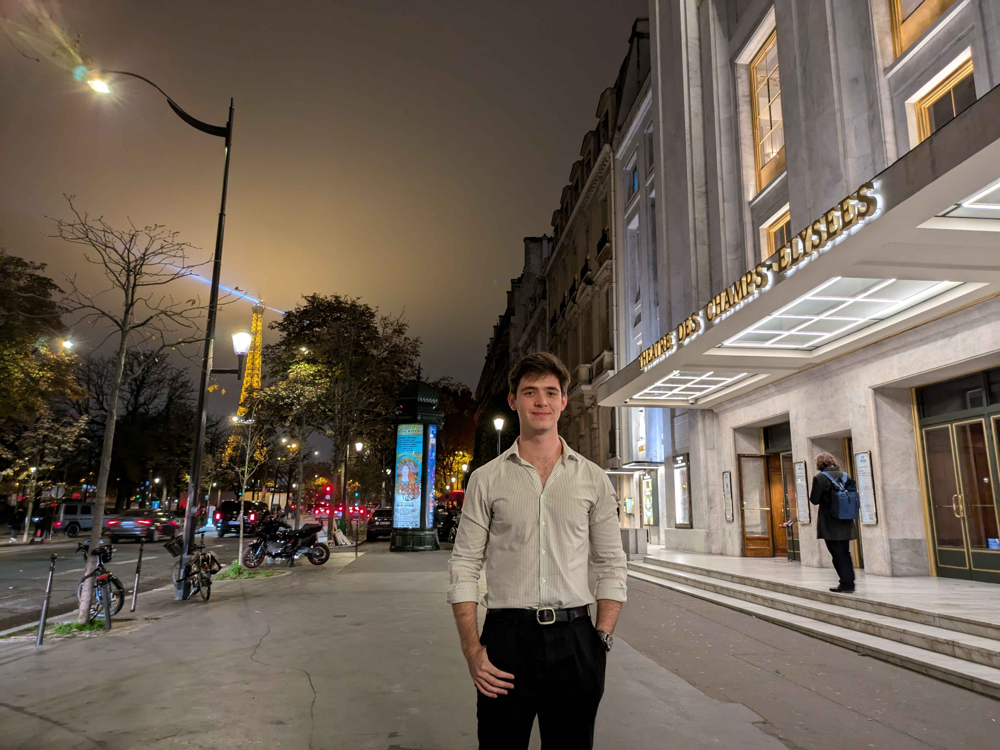

I have a few interests outside of philosophy and cognitive science.
In March 2025, I had the chance to perform in Paris Fashion Week with Duranimal (Duran Lantink's show) and at the Saut Hermès dinner. These experiences gave me a firsthand look at how fashion can act as a communicative medium. Naturally, these experiences influenced some of my views about how fashion is like a language (see my work on perception and mode-dependent content in fashion).
I am a classically trained bass vocalist. Currently, I sing with the Choir of the Orchestra of Paris. Before that, I studied at the Peabody Conservatory and the Oberlin Conservatory.
Some notable concerts I've sung in:
I also enjoy a few sports that have nothing to do with my research (as far as I can tell). I play chess, currently rated 1742 FIDE (blitz). In college, I was a defensive end for Oberlin's football team. And in high school, I played varsity tennis.